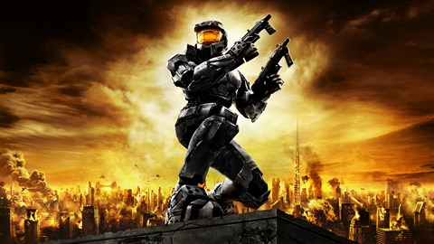

Origins
My love for video games started when my grandpa got me my first gaming console in December 2008. He got my brother and I a Xbox 360 to share with each other. Even though it was a together gift, I quickly became the main user of the console and I've been in love ever since!
My First Games:
Call of Duty World At War

Call of Duty: World at War is a 2008 first-person shooter game developed by Treyarch and published by Activision. It is the fifth main installment of the Call of Duty series and is the fourth entry in the series to be set during World War II.
Initial release date: November 11, 2008
Platforms: PlayStation 3, Xbox 360, Wii, Microsoft Windows, Nintendo DS
Designers: Rich Farrelly, Corky Lehmkuhl, Dave Anthony, Adam Gascoine, Jeremy Luyties
Halo 2
Halo 2 is a 2004 first-person shooter game developed by Bungie and published by Microsoft Game Studios for the Xbox console. Halo 2 is the second installment in the Halo franchise and the sequel to 2001's critically acclaimed Halo: Combat Evolved.
Initial release date: November 9, 2004
Platforms: Xbox, Microsoft Windows, Xbox One
Designers: Jason Jones, Jaime Griesemer
Throughout the Years
Throughout the years, I've played hundreds of titles from all different genres. I started collecting games and gaming consoles soon after my first console. I remember running home from school every day just to play my favorite games. Gaming has always been a way for me to relax and escape from the real world and I don't think I'll ever stop playing.
Consoles I Own:
- GameCube
- Wii
- DSI
- Nintendo Switch
- Xbox 360
- Xbox One
- Xbox Series X
- Xbox Series S
- PlayStation 4
- PlayStation 5
Favorites
Here are my top 10 games I've played:
- Call of Duty: Black Ops 2
- Dead By Daylight
- Overwatch
- Detroit: Become Human
- Call of Duty: Black Ops 3
- Grand Theft Auto 5
- Infamous Second Son
- Team Fortress 2
- The Quarry
- Until Dawn